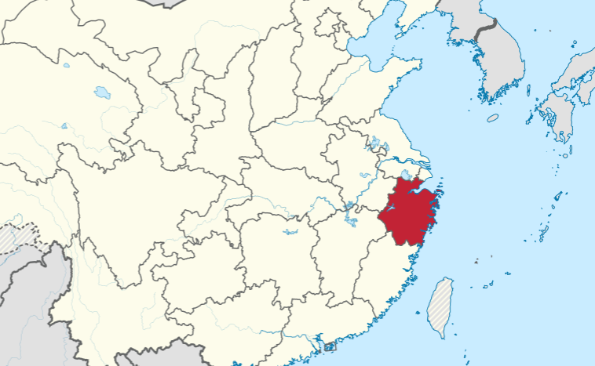
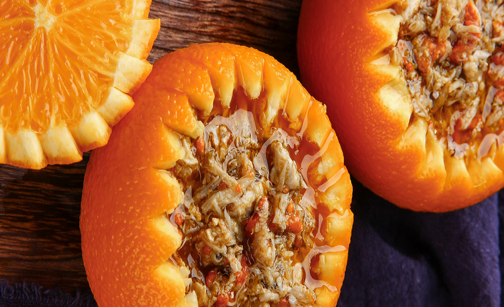

About
Zhe is the abbreviation for Zhejiang province, at the east coast of China. Zhejiang enjoys multiple natural fisheries, and has lots of river channels. Zhe Cuisine prospered when Song dynasty moved its capital to one of the cities in Zhejiang, combining the north and south cooking skills.

Specialties and Features
The rivers and the fertile flood plains nourished Zhe people, and the chefs take advantage of the various products. The chefs select ingredients that are tender, exquisite, fresh and special. Zhe people enjoy mild but flavorful dishes, so the chefs use less oil and more steaming techniques to keep things tender. They also pay much attention to the appearance of dishes, carving flowers or even stories with food to make it a delicacy.